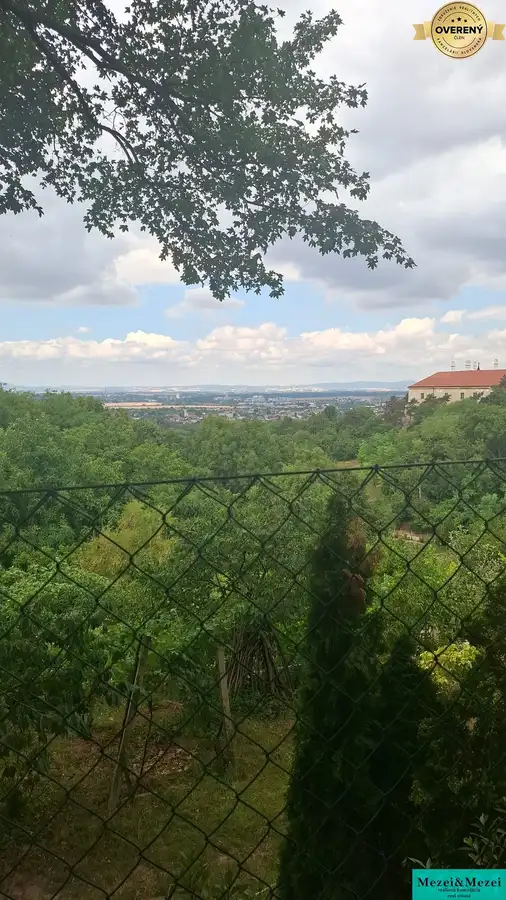

Predaj · Pozemok
Na predaj | Pozemok na rekreačné využitie s krásnym výhľadom – Hlohove
Hlohovec, Hlohovec;
Cena v RK

- Plocha383 m²
- Poschodie0.
O nehnuteľnosti
Pozemok na predaj – ideálny pre chatu alebo záhradu, Hlohovec – Šomodská ulica
Ponúkame na predaj pozemok s výmerou 383 m², situovaný vo vyhľadávanej lokalite Hlohovec – Šomodská ulica.
Pozemok sa nachádza na kopci a je vhodný na rekreačné využitie – výstavbu chaty, záhradného domčeka alebo na vytvorenie vlastnej záhrady na oddych. Lokalita ponúka pokojné prostredie, krásne výhľady a príjemnú atmosféru mimo mestského ruchu.
Základné informácie:
Lokalita: Hlohovec – Šomodská ulica
Výmera: 383 m²
Vhodný na výstavbu chaty alebo využitie ako záhrada
Pokojná lokalita na kopci
Cena: Dohodou.
V prípade záujmu o viac informácií alebo obhliadku nás neváhajte kontaktovať.
Parametre
- Rozloha pozemku
- 383 m²
- Poschodie
- prízemie
- Status
- aktívne
- Dátum zverejnenia
- 2026-07-03
Kde to je
Ďalšie ponuky
Celá ponuka